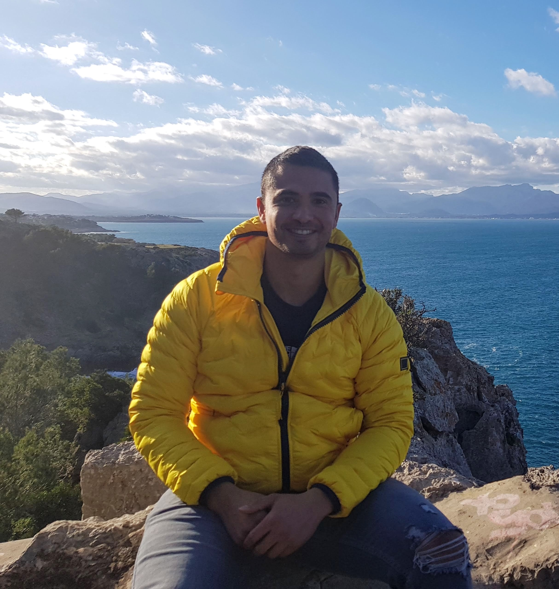

|  | Gabriel De GregorioDeckhand, Sport & Exercise Scientist I work in the maritime industry as a deckhand on superyachts. I'm currently studying to become a web developer in my spare time. Huge lover of tech and travelling, follow my Youtube page if you'd like to see where I go, the equipment I buy and use, along my journey what is called life, but only if you're interested of course :) |
| MY Albatross (72m, Delta, Private) (04/11/2019-05/01/2020) | Deckhand joined on a temporary contract to cover crew on leave. Duties included, weekly wash downs, working aloft and over the side.Paint job repairs around the boat where rust was present, and re painting the shower floor in crew cabins using top coat and Griptex. Participated in fire drills dressing up and abandon ship drills. |
| MY Amevi (80m, Oceanco, Private) (09/05-2018 – 17/06/2018 AND 11/2018 – 06/19) | Deckhand Duties: Joined the vessel in Maldives on a temp position to help with the upcoming boss trip around the atolls and the crossing back to the Mediterranean. All round deck duties, teak scrubbing, wash down, daily rinse, mooring lines, guest set up, launching tenders and bridge lookout duties, chart corrections. Re-joined in Palma during yard period where vessel underwent a new paint job for 5 months and various other projects were taken. Participated in a couple of boss trips around south of France. |
| MY Manifiq (41m, Mondo Marine, Private) (15/08/2017-06/10/2017 AND 19/02/2018-21/04/2018) | Deck/Stew Duties: Joined the vessel in Genova on a temp contract the day before the boss trip. Assisted the interior team stocking up the fridges with drinks for the guests. Deck duties included, mooring lines, anchoring and setting up water sport toys for guests. Invited back for second stint as day worker living on board whilst boat in the yard. Painting bilges and anchor and other repair duties around the boat, ready for Barcelona Yacht Show |
| MY Eminence (78m, Abeking & Rasmussen, Private) 17/01/2017-31/01/2017 | Deckhand Trial period-live on-board, Barcelona Duties: Assisting the deck crew in full wash downs, cleaning bilges and assisting with the removal of antenna dome off from the mast onto the docks for replacement |
|